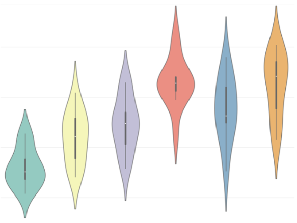
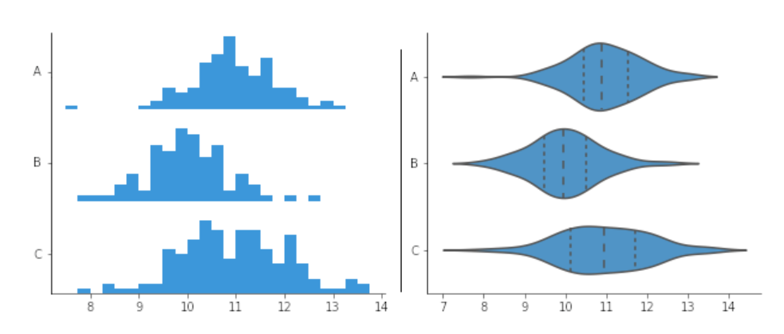
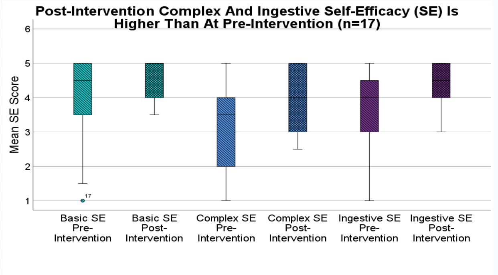

library(haven) ## for SPSS data
library(naniar)
library(dplyr)
library(ggplot2) ## for data viz
library(ggdist)
library(gghalves)
library(see)
library(tidyverse)
oralhealthdata_prepost <- read_sav("data/3.19.2025.oralhealth.erica.sav",
user_na = FALSE)
# REPLACE
## replace missing data
oralhealthdata_prepost <- oralhealthdata_prepost %>%
replace_with_na_all(condition = ~.x %in% c(-99, -50))12 Visualizing pre/post scores
How to create violin and raincloud plots
Abstract
This chapter introduces students to advanced data visualization techniques for comparing distributions across groups and time points using violin plots and raincloud plots in ggplot2. Students begin by learning to import SPSS datasets using the haven package and prepare pre/post intervention data for visualization. Using a real-world example from an oral health and type 2 diabetes study conducted by FRI students, the chapter demonstrates how to reshape wide-format data with multiple time points into long format using tidyr’s pivot_longer() and pivot_wider() functions. Students create violin plots that layer box plots with kernel density curves to reveal complete data distributions, then advance to raincloud plots that combine half-violin distributions, box plots, and jittered raw data points in a single comprehensive visualization. The chapter covers practical customization techniques including manual color scaling, position adjustments, and layering multiple geometric elements to create publication-ready figures. Researchers explore how these visualizations help assess normality assumptions for statistical tests, identify outliers, compare group distributions, and effectively communicate intervention effects. By the end of this chapter, researchers will understand when violin and raincloud plots are more informative than traditional box plots and be able to create sophisticated pre/post visualizations that display both summary statistics and underlying data distributions for their own research projects.
Keywords
tidyr, data visualization, ggplot2, violin plots, raincloud plots, pre/post analysis, intervention analysis
Tip📖
haven and geom_violin ( ) resources
12.1 Oral Health Dataset
A team of FRI students in the Public Health stream designed a study on oral health and type 2 diabetes. The convenient sample of Binghamton students, faculty, and staff was collected in September and October of 2024.
12.2 Library
12.3 Using tidyr
library(tidyr)
# Create long format with separate columns for each SE type
longdata <- pivot_longer(oralhealthdata_prepost,
cols = c("BSE_T1", "BSE_T2", "CSE_T1", "CSE_T2", "ISE_T1", "ISE_T2"),
names_to = c("SE_type", "Time"),
names_pattern = "(.+)_(.+)",
values_to = "SE",
values_drop_na = TRUE)
# Convert T1/T2 to before/after
longdata$Time <- ifelse(longdata$Time == "T1", "before", "after")
# Pivot wider to get separate columns for each SE type
longdata <- pivot_wider(longdata,
names_from = SE_type,
values_from = SE)
# Keep only the desired columns
longdata <- longdata[, c("Time", "BSE", "CSE", "ISE")]
longdata$Time <- factor(longdata$Time, levels = c('before','after'))
longdata_long <- pivot_longer(longdata, cols = c(BSE, CSE, ISE),
names_to = "SelfEfficacy",
values_to = "Score")
longdata_long$SelfEfficacy <- factor(longdata_long$SelfEfficacy, levels = c("BSE", "CSE", "ISE"))
longdata_long$Time <- factor(longdata_long$Time, levels = c("before", "after"))
longdata_long <- longdata %>%
pivot_longer(cols = c(BSE, CSE, ISE),
names_to = "SelfEfficacy",
values_to = "Score")
# Create a new variable combining 'SelfEfficacy' and 'Time'
longdata_long$SelfEfficacyTime <- factor(
paste(longdata_long$SelfEfficacy, longdata_long$Time),
levels = c("BSE before", "BSE after", "CSE before", "CSE after", "ISE before", "ISE after")
)More more information on tidyr, see the tidyr chapter.
12.4 Visualizing with violin plots
12.4.1 What is a violin plot?
Combines components of a box plot and kernel density plot (similar to a histogram but shows the distribution as a continuous curve instead of with bars).
Shows the distribution of variables for each group

12.4.2 Why are violin plots important?
- Helpful in making comparisons amongst distributions of different groups.
- Good way to visualize data.
- Easy way to identify trends and outliers in the data amongst different variables, which will help in forming relationships between different variables in your data.
- Can be creative and customize plots how you like (filling in plots, coloring, sizing, transparency, etc.)

12.4.3 How can violin plots help in your projects?
- Examples
Find normal distributions in your data, which will aid in the decision of what time of statistical test you use
Compare ditributions between two groups in your data
Was there an overall change in values in one of your variables before or after an event?
12.5 Example: T-test
A paired t-test is a statisical technique to compare the group means on two different variables when participants responded to both variables. The objective of the study from this dataset is to examine whether self-efficacy increased after a brief online educational intervention video.
The plot below visualizes the six variables (3 pretest, 3 postest) ussed in the 3 paired t-tests.
 :::
12.6 Example: Violin Plot
Now you can see the distribution of the basic self-efficacy variable, in addition to the box plot.
ggplot(longdata_long,
aes(
x = SelfEfficacyTime,
y = Score,
fill = SelfEfficacy)) +
geom_violin() +
geom_boxplot(
width = .1,
position = position_dodge(width = 0.9)) +
geom_point(aes(color = Time),
size = 1,
position = position_jitter(width = 0.2)) +
scale_fill_manual(
values = c(
"BSE" = "#69b3a2",
"CSE" = "cornflowerblue",
"ISE" = "darkorchid4")) +
scale_color_manual(
values = c(
'before' = 'white',
'after' = 'black')) +
ggtitle("Change in Self-Efficacy Due to Intervention")
12.7 Raincloud plots
- What if you wanted to see the distribution of the variables and the raw data side by side?
- A raincloud plot allows you to add different types of plot types onto one figure.
- Below, the figure has a half violin plot, boxplot, and raw data points jittered on top.
ggplot(longdata_long,
aes(
x = SelfEfficacyTime,
y = Score,
fill = SelfEfficacy)) +
geom_violinhalf(aes(
x = SelfEfficacyTime,
y = Score,
fill = SelfEfficacy), trim = TRUE,
position = position_nudge(x = 0.15)) +
geom_boxplot(width = .1, outlier.shape = NA,
position = position_nudge(x = -0.15)) + geom_point(position = position_nudge(x = -0.35)) +
scale_fill_manual(values = c(
"BSE" = "#69b3a2",
"CSE" = "cornflowerblue",
"ISE" = "darkorchid4")) +
scale_color_manual(values = c(
'before' = 'white',
'after' = 'black')) +
ggtitle("Change in Self-Efficacy Due to Intervention")
Tip📖 raincloud plot resources
There are many different ways to create raincloud plots:
12.8 Summary
- Violin and raincloud plots are an effective strategy to visualize your information.
- It is important to visualize your data in a way that will make it easy for the audience to understand your findings.
- Plots can be easily customized in R using:
- Fill
- Color
- Size
- Transparency (alpha = )
- Position
Now you can confidently create your own violin and raincloud plots in R!!!